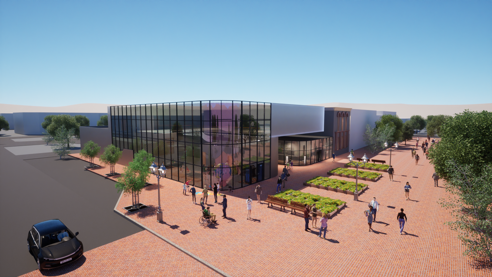
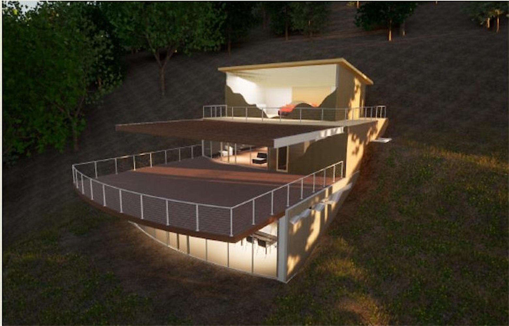

Index / Daylighting & Illumination Portfolio
Work shaped
by light.
Architectural daylighting studies, luminaire prototypes, analog 35mm observations, and physical mockups.
01 / Daylighting & Architectural Photometrics
01
Children's Museum
Civic Architecture · Daylighting · sDA 78% · 2025
↗
02
 University Central Lobby
Atrium Optics · Circadian 250+ mEDI · 2025
↗
03
Luxury Mountain Home
Passive Solar · Alpine Eave 71° Cutoff · 2025
↗
04
University Central Lobby
Atrium Optics · Circadian 250+ mEDI · 2025
↗
03
Luxury Mountain Home
Passive Solar · Alpine Eave 71° Cutoff · 2025
↗
04
 Exterior Bench Lighting Study
Physical Mockup · BUG B1-U0-G0 · 2025
↗
Exterior Bench Lighting Study
Physical Mockup · BUG B1-U0-G0 · 2025
↗

